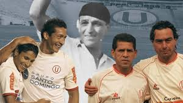
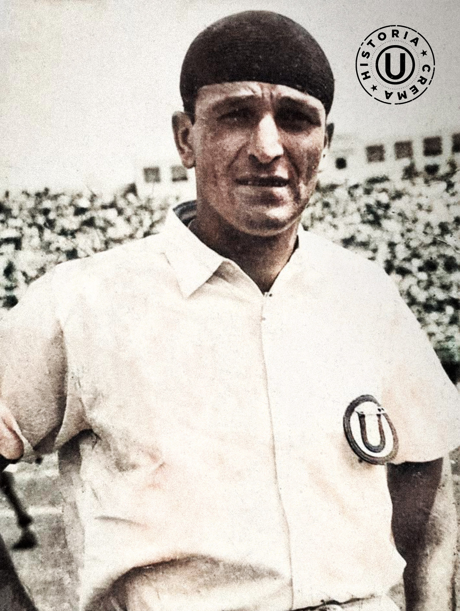

Nuestra misión
Preservar y documentar la rica historia visual de las camisetas de Universitario de Deportes, el club más grande del Perú.
¿Por qué este proyecto?
Las camisetas de fútbol son mucho más que prendas deportivas. Son testimonios tangibles de épocas, victorias, derrotas y momentos que marcaron la historia de un club. Cada diseño cuenta una historia, cada patrocinador representa un contexto social y económico, cada marca deportiva refleja las tendencias de su tiempo.
Desafortunadamente, muchas de estas camisetas históricas se han perdido con el tiempo. Algunas están en manos de coleccionistas privados, otras simplemente desaparecieron. Este proyecto nace de la necesidad de documentar y preservar digitalmente este patrimonio visual antes de que se pierda definitivamente.
A través de fotografías de alta calidad, descripciones detalladas y contexto histórico, buscamos crear un archivo público que cualquier hincha, historiador o simplemente curioso pueda consultar para entender mejor la evolución visual del club.

Nuestra metodología
Cada camiseta documentada en este sitio ha sido cuidadosamente investigada. No nos limitamos a mostrar imágenes, sino que buscamos proporcionar contexto:
- Autenticidad: Verificamos la autenticidad de cada pieza a través de fotografías históricas, catálogos oficiales y testimonios de coleccionistas.
- Contexto histórico: Investigamos en qué temporada se usó, qué logros se consiguieron con ella, quiénes fueron los jugadores emblemáticos que la vistieron.
- Detalles técnicos: Documentamos la marca fabricante, el material, los sponsors y cualquier detalle distintivo del diseño.
- Fotografía de calidad: Todas las imágenes son procesadas para mostrar fielmente los colores, texturas y detalles de cada camiseta.

Ídolo de Universitario de deportes, Lolo Fernández
Nuestros valores
Pasión: Somos hinchas comprometidos con la historia del club. Este proyecto nace del amor por los colores cremas.
Rigor: No publicamos información sin verificarla. Cada dato es contrastado con múltiples fuentes.
Accesibilidad: Creemos que este conocimiento debe ser público y gratuito. Cualquier persona en el mundo puede acceder a nuestra galería.
Comunidad: Este proyecto se enriquece con el aporte de coleccionistas, ex jugadores y hinchas que comparten sus conocimientos y fotografías.
Visión a futuro
Este proyecto está en constante crecimiento. Nuestros objetivos a mediano plazo incluyen:
Expandir la colección
Documentar camisetas desde 1924 hasta la actualidad, cubriendo más de 100 años de historia.
Historias de jugadores
Entrevistar a ex futbolistas que vistieron estas camisetas y recoger sus anécdotas.
Base de datos interactiva
Desarrollar un sistema de búsqueda avanzada por año, marca, tipo y jugador.
Exposiciones físicas
Organizar exposiciones temporales en museos y espacios culturales.
¿Tienes información o fotografías que quieras compartir?
Si eres coleccionista, ex jugador o simplemente tienes material histórico que pueda enriquecer este proyecto, nos encantaría escucharte.
Contáctanos